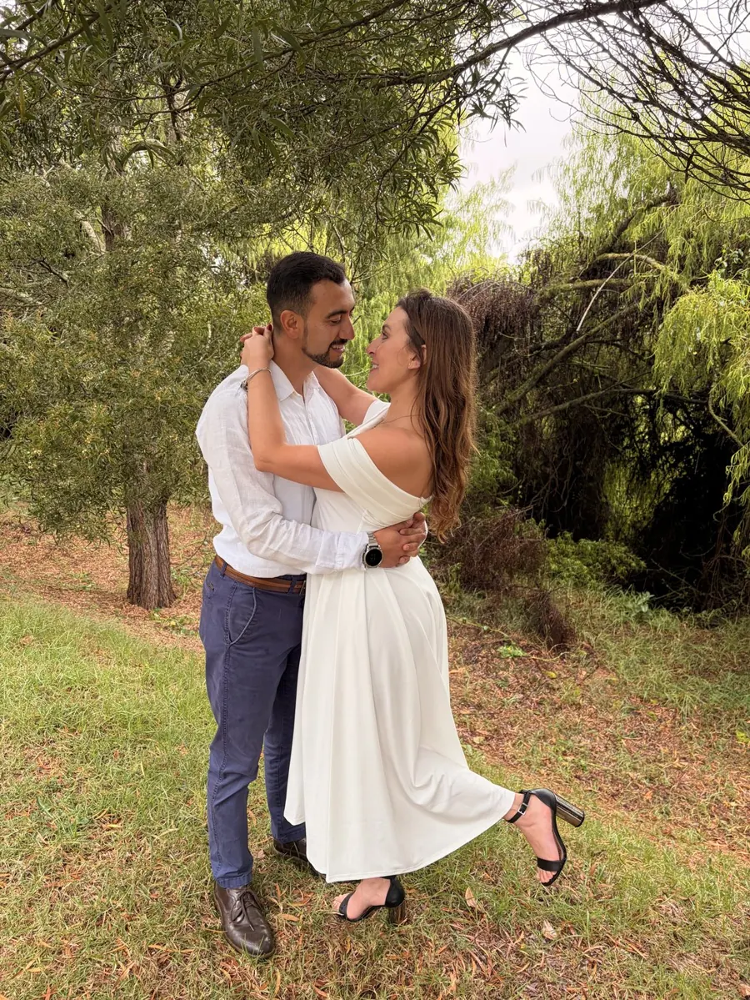

Para
Nuestros queridos invitados

Con todo nuestro cariño, queremos que nos acompañes en el inicio de esta nueva historia.
Con la bendición de nuestros padres
Jorge Mejía · Rosa Niño†quien nos acompaña desde el cielo
Miguel Vargas · Carmen Velandia
Ana&Juan
30 · 01 · 2027
Hacienda La Victoria